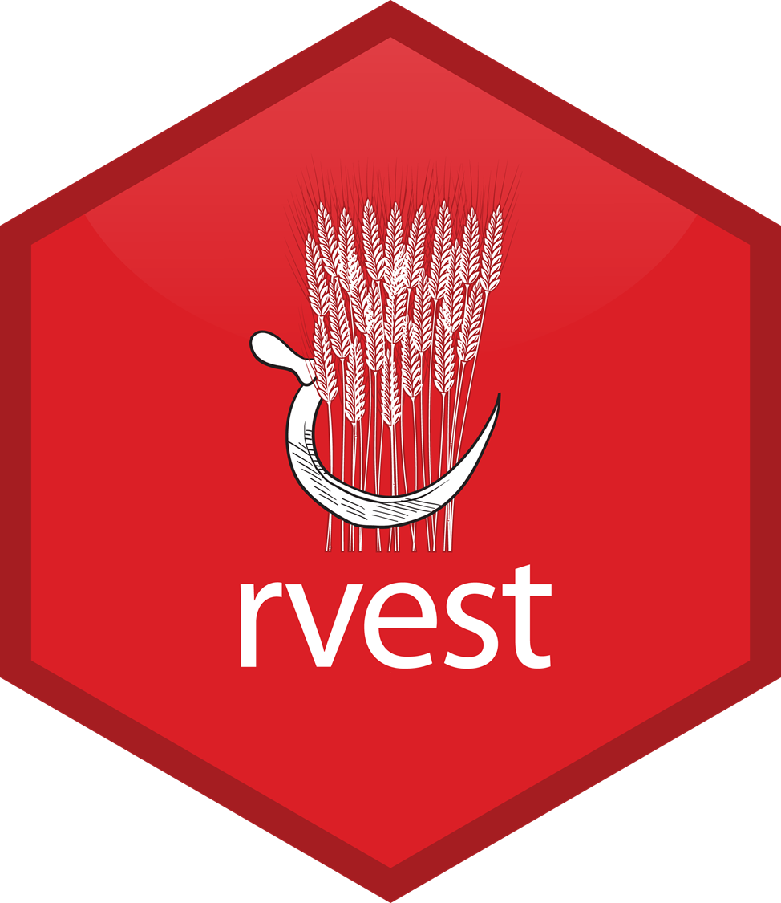

Data Collection
Sang-Il Lee
Collecting Data from Files on the Web


readr package
# A tibble: 6 × 5
`Student ID` `Full Name` favourite.food mealPlan AGE
<dbl> <chr> <chr> <chr> <chr>
1 1 Sunil Huffmann Strawberry yoghurt Lunch only 4
2 2 Barclay Lynn French fries Lunch only 5
3 3 Jayendra Lyne N/A Breakfast and lunch 7
4 4 Leon Rossini Anchovies Lunch only <NA>
5 5 Chidiegwu Dunkel Pizza Breakfast and lunch five
6 6 Güvenç Attila Ice cream Lunch only 6
openxlsx package
Var1 Var2 Var3 Var4 Var5 Var6 Var7
1 TRUE 1 1.00 a 42042 3209324 This NA
2 TRUE NA NA b 42041 <NA> NA
3 TRUE 2 1.34 c 42040 <NA> NA
4 FALSE 2 NA <NA> NA <NA> NA
5 FALSE 3 1.56 e NA <NA> NA
6 FALSE 1 1.70 f 42037 <NA> NA
7 NA NA NA <NA> 42036 <NA> NA
8 FALSE 2 23.00 h 42035 <NA> NA
9 FALSE 3 67.30 i 42034 <NA> NA
10 NA 1 123.00 <NA> 42033 <NA> NA
googlesheet4 package
library(googlesheets4)
gs4_deauth()
read_sheet("https://docs.google.com/spreadsheets/d/1U6Cf_qEOhiR9AZqTqS3mbMF3zt2db48ZP5v3rkrAEJY/edit#gid=780868077")# A tibble: 624 × 6
country continent year lifeExp pop gdpPercap
<chr> <chr> <dbl> <dbl> <dbl> <dbl>
1 Algeria Africa 1952 43.1 9279525 2449.
2 Algeria Africa 1957 45.7 10270856 3014.
3 Algeria Africa 1962 48.3 11000948 2551.
4 Algeria Africa 1967 51.4 12760499 3247.
5 Algeria Africa 1972 54.5 14760787 4183.
6 Algeria Africa 1977 58.0 17152804 4910.
7 Algeria Africa 1982 61.4 20033753 5745.
8 Algeria Africa 1987 65.8 23254956 5681.
9 Algeria Africa 1992 67.7 26298373 5023.
10 Algeria Africa 1997 69.2 29072015 4797.
# ℹ 614 more rowsWeb Scraping
rvest package
Example 1: Website
Example 1: Title
library(rvest)
url <- "https://rvest.tidyverse.org/articles/starwars.html"
read_html(url) |>
html_elements("section") |>
html_element("h2") |>
html_text2()[1] "The Phantom Menace" "Attack of the Clones"
[3] "Revenge of the Sith" "A New Hope"
[5] "The Empire Strikes Back" "Return of the Jedi"
[7] "The Force Awakens" Example 1: All together
section <- read_html(url) |>
html_elements("section")
tibble(
title = section |>
html_element("h2") |>
html_text2(),
released = section |>
html_element("p") |>
html_text2() |>
str_remove("Released: ") |>
parse_date(),
director = section |>
html_element(".director") |>
html_text2(),
intro = section |>
html_element(".crawl") |>
html_text2()
)section <- read_html(url) |>
html_elements("section")
tibble(
title = section |>
html_element("h2") |>
html_text2(),
released = section |>
html_element("p") |>
html_text2() |>
str_remove("Released: ") |>
parse_date(),
director = section |>
html_element(".director") |>
html_text2(),
intro = section |>
html_element(".crawl") |>
html_text2()
)# A tibble: 7 × 4
title released director intro
<chr> <date> <chr> <chr>
1 The Phantom Menace 1999-05-19 George Lucas "Turmoil has engulfed the…
2 Attack of the Clones 2002-05-16 George Lucas "There is unrest in the G…
3 Revenge of the Sith 2005-05-19 George Lucas "War! The Republic is cru…
4 A New Hope 1977-05-25 George Lucas "It is a period of civil …
5 The Empire Strikes Back 1980-05-17 Irvin Kershner "It is a dark time for th…
6 Return of the Jedi 1983-05-25 Richard Marquand "Luke Skywalker has retur…
7 The Force Awakens 2015-12-11 J. J. Abrams "Luke Skywalker has vanis…Example 2: Naver news
Example 2: Naver news
url <- "https://search.naver.com/search.naver?where=news&ie=utf8&sm=nws_hty&query=%EC%A7%80%EB%B0%A9%EC%86%8C%EB%A9%B8"
title <- url |>
read_html() |>
html_elements(".news_tit") |>
html_text2()
contents <- url |>
read_html() |>
html_elements(".dsc_txt_wrap") |>
html_text2()
tibble(title, contents)# A tibble: 10 × 2
title contents
<chr> <chr>
1 "[지방소멸 경고등] 위기 속 작은 희망…영월 옥동초교의 실험" "연합뉴…
2 "지자체 ‘지방소멸기금’ 최대 160억 지원" "지방소…
3 "접경지, 청년 창업 ‘확대’…지방소멸 ‘극복’ 시도" "[앵커] …
4 "우수 지자체에 지방소멸대응기금 집중 지원한다…배분체계 개선" "행정안…
5 "저출산율·양극화… 韓사회는 왜 소멸의 길을 가고 있나" "사람들…
6 "[인터뷰] 천하람 \"저출산·지방소멸·정치개혁…미래세대 이슈에 집중\"" "또 지방…
7 "[매일경제TV] 지방 소멸 막기 위한 정책" "인구 감…
8 "지역소멸 시대, 농협의 역할에 변화가 필요하다" "농식품…
9 "여당 재선 엄태영 \"지방소멸위기 처한 제천·단양 반드시 살리겠다\"" "'실천하…
10 "“강진군, 지역소멸 위기 극복 인구정책 롤모델 급부상”" "군에 따…API
httr2 package

Example: Naver news
NAVER Developer (https://developers.naver.com/main/)
-
[Products]-[서비스 API]-[검색] (https://developers.naver.com/products/service-api/search/search.md)
오픈 API 이용 신청
개발 가이드 보기
-
오픈 API 이용 신청
애플리케이션 이름
-
비로그인 오픈 API 서비스 환경
WEB 설정
웹 서비스 URL: http://localhost
Example: Naver news
library(httr2)
search <- "지방소멸"
your_url <- "https://openapi.naver.com/v1/search/news.json"
result_naver <- request(your_url) |>
req_headers(
"X-Naver-Client-ID" = your_ClientID,
"X-Naver-Client-Secret" = your_Client_Secret
) |>
req_url_query(
query = search,
display = 100,
start = 1,
sort = "date"
) |>
req_perform() |>
resp_body_json()
naver_data <- data.frame(t(sapply(result_naver$items, data.frame)))
naver_datalibrary(httr2)
search <- "지방소멸"
your_url <- "https://openapi.naver.com/v1/search/news.json"
result_naver <- request(your_url) |>
req_headers(
"X-Naver-Client-ID" = your_ClientID,
"X-Naver-Client-Secret" = your_Client_Secret
) |>
req_url_query(
query = search,
display = 100,
start = 1,
sort = "date"
) |>
req_perform() |>
resp_body_json()
naver_data <- data.frame(t(sapply(result_naver$items, data.frame)))
naver_data title
1 '저출생' 파장에 사회 전반이 '흔들'
2 포천시의회, 인구감소대응특위 위원장단 선임
3 농협 경제사업 강화로 지역 일자리 창출 확대해야
4 지역<b>소멸</b> 시대, 농협의 역할에 변화가 필요하다
5 장성군, 나주시·화순·담양군과 전남권 개발제한구역 전면 해제 공동건의
6 상품권·온라인 포인트·상장 주식…7월부터 쉽고 편하게 기부하세요
7 전통시장 부활‥"상권 살리자"
8 경남도청 산악회, 전남 사랑애 서포터즈 홍보 앞장
9 전북하이텍고-완주군, 협약형 특성화고 1차 서류심사 통과
10 하승철 하동군수, 국토부에 컴팩트 매력도시 현안 사업 건의..제2차관 만나 확...
11 Professor Story / 군장대 외식조리과 이선일 교수 ”캡스톤 디자인에 입각하...
12 '전라·제주 여성가족정책 네트워크' 출범…전북여성가족재단, 지역주도 여성...
13 [매일경제TV] <b>지방 소멸</b> 막기 위한 정책
14 [인터뷰] 천하람 “개혁신당 3석, ‘소신파 정치인’ 멸종 막겠다는 국민 뜻”
15 [헬로 이슈토크] 중구영도구 조승환 당선인 "기업유치·일자리 창출 집중"
16 '1명 출산할 때 1억 원'...저출생 해결책 될까?
17 경남도청 산악회, '전남 사랑애 서포터즈 홍보' 앞장
18 7월부터 '이것'도 기부 가능해진다
19 영주시, 제1회 추경예산안 1조 1천838억원 편성
20 일본의 ‘2지역 거주인구 대책’
21 "혐오정치 끝내러 왔다" 서미화, '이준석' 콕 찍었다
22 경상북도시장군수협의회 정례회 개최…저출생 극복 성금 전달
23 "전남권 개발제한구역 전면 해제" 공동건의
24 7월부터 백화점·마트 상품권, 상장 주식, 네이버 포인트도 기부 가능
25 제주-광주전남 '혁신플랫폼', 미래형운송기기·미래모빌리티 발전 '맞손'
26 장성군, 나주시‧화순군‧담양군, 전남권 개발제한구역 전면 해제 공동건의
27 “목포대 의과대학 유치 결의”… 목포시 5월 시정현안회의 개최
28 주식·백화점 상품권·네이버 페이도 기부된다…7월31일 시행
29 일본판 ‘고향사랑기부제’ 9조원 뭉칫돈…답례품 경쟁 과열 양상도
30 장성군 등 전남 중부권 4개 시군, 개발제한구역 전면 해제해야
31 백화점 상품권·주식 등 유가증권 기부 가능해진다
32 경남도청 산악회, 전남 사랑애 서포터즈 홍보 앞장선다
33 "네이버포인트·백화점상품권으로 기부하세요"
34 '전남 사랑애 서포터즈' 홍보 앞장선 경남도청 산악회...전남도청 산악회와 상...
35 강원대 김헌영 총장, '차이나는 클라스 – 위대한 질문' 출연
36 [취재파일] 인공위성에 찍힌 생생한 북한, 경제학자가 분석했더니...
37 경남도청 산악회, '전남 사랑애서포터즈' 홍보 앞장
38 "백화점 상품권, 네이버 포인트도 기부 가능"...입법 예고
39 '영호남 화합' 경남도청 산악회, 전남 사랑애 서포터즈 홍보 앞장
40 경북도의회, 경북도 2억1700만원 감액ㆍ경북교육청 9억818만 원 감액
41 김헌영 강원대 총장, 차이나는 클라스 출연
42 경남도청 산악회, 전남 사랑애 서포터즈 홍보 앞장
43 대학 캠퍼스에도 실버타운 들어서나? 고령화시대 새 먹거리로 주목[황재성의 ...
44 [인터뷰] 천하람 "저출산·<b>지방소멸</b>·정치개혁…미래세대 이슈에 집중"
45 함양 서상초, '경남 작은학교 살리기 공모 사업' 선정
46 "조국당 돌풍 진원지 '광주', 민주당 뼈아프게 새겨야"..."전주 떠난 KCC, 연...
47 "어린이 없는 놀이터 부지기수"…초등생 확 줄고 문 닫는 유치원 '속출'
48 [청년이 희망이다] "완도를 제주처럼 멋지게"…피어싱한 20대 여성 이장의 도...
49 7월부터 백화점 상품권·네이버 포인트·주식도 기부 가능해진다
50 경상북도시장군수협의회, 정기회의 개최…저출생 극복 성금 2000만원 전달
51 접경지, 청년 창업 ‘확대’…<b>지방소멸</b> ‘극복’ 시도
52 하승철 하동군수, 국토교통부에 컴팩트 매력도시 현안사업 건의
53 세종시-청양군, 고향기부 활성화 위해 교차 기부
54 전남도-전남도새마을회, 지역 미래 발전 맞손
55 경상북도시장군수협의회 정례회 개최…저출생 성금 2천만원 전달
56 고령군, 2040 중장기 종합발전계획 주민설명회 개최
57 영주시, 2024년도 제1회 추가경정 예산안 1조 1838억 원 편성
58 '농사짓는 현직 도의원' 김성일, 전남도의장 도전
59 지자체 ‘<b>지방소멸</b>기금’ 최대 160억 지원
60 경북 김천시, 제1회 추경예산안 1조4850억 원 편성…1200억 원 증액
61 호서대, ㈜한국후꼬꾸와 '외국인 유학생 취업' 산학협력
62 고령군, '2040 중장기 종합발전계획 주민설명회' 개최
63 재개발·재건축 규제 풀어도 '내 집 마련' 멀어지는 이유
64 장성군-4개 시.군 자치단체장, 전남권 개발제한구역 전면해제 공동 건의
65 전남도-전남도새마을회, 지역 미래 발전 맞손
66 저출산 극복 위한 국회 세미나···"부영모델 확산여부 관심"
67 세종-청양 고향사랑기부제 교차기부 동참
68 저출산 극복 위한 기업의 역할과 국회의 지원방안 세미나 개최
69 [위클리오늘] 경상북도시장군수협의회 정례회 개최 … 저출생 극복 성금 전달
70 “인구정책 1번지 비법이 뭔가요?” …강진군 인구정책 벤치마킹 이어져
71 포천시의회 '인구감소 대응 특위' 열고 임종훈 위원장·안애경 부위원장 선임
72 성평등 실현을 위한 최초 광역형 성평등기구 출범
73 포천시의회 인구감소 위기 대응 특별위원회 출범: 위기 극복을 위한 기대와 과...
74 경남도립남해대학-경남국제외국인학교, 글로컬대학사업 및 교육발전특구사업 ...
75 울진 월변지구 개발 속도…2026년 기반시설 준공
76 나주시,, 장성군화순담양군과 전남권 개발제한구역 전면 해제 공동건의
77 하승철 하동군수, 국토교통부에 컴팩트 매력도시 현안 사업 건의
78 함양 서상초, 경남 작은학교 살리기 공모 사업 선정
79 [e추천경매물건]송파 올림픽선수촌 131.8㎡, 18.8억원 매물 나와
80 영월군 '경기의정포럼, 2024 의정워크숍' 개최
81 태백시, 청년 및 신혼부부 대상, 만원 임대료 입주자 모집
82 [지역<b>소멸</b>을 막아라] "고등학교서도 유학생이 공부를…" 김천고 한국의 '이튼...
83 "은퇴 준비라는 것은 행복하게 살기 위한 준비"
84 [<b>지방소멸</b> 경고등] 위기 속 작은 희망…영월 옥동초교의 실험
85 여당 재선 엄태영 "<b>지방소멸</b>위기 처한 제천·단양 반드시 살리겠다"
86 "닥터바리스타 방탄커피" 등 4일 캐시워크 돈버는퀴즈 전체 문제+정답![단독]
87 저출산율·양극화… 韓사회는 왜 <b>소멸</b>의 길을 가고 있나
88 영월군의회, 집행부와 함께 우수사례 현장 워크숍
89 함양 서상초, 경남 작은학교 살리기 공모 사업 선정
90 초고령사회 눈앞… 실버타운 승부수로 ‘두 마리 토끼’ 잡는다
91 장성군, 나주‧화순‧담양군 '전남권 개발제한구역 전면 해제' 공동건의
92 전남도-전남도새마을회, 지역 미래 발전 '맞손'
93 [에디터 프리즘] 1만원 로또 주택
94 영주시, 제1회 추경예산안 1조 1838억원 편성
95 포천시의회, '인구감소 위기 대응 특별위원회' 제1차 회의 개의···위원장·...
96 TK 출신 제3지대 당선인 누가 있나?
97 세종-청양 고향사랑기부제 교차기부 동참 눈길
98 곡성군, 곡성군민의 날 기념행사 개최
99 세종-청양 고향사랑기부제 교차기부 동참 눈길
100 경북 시장군수협의회, 봉화서 현안사업 논의…저출생 극복 성금 전달
originallink
1 http://news.lghellovision.net/news/articleView.html?idxno=465222
2 https://www.ekn.kr/web/view.php?key=20240505022040658
3 http://www.ikpnews.net/news/articleView.html?idxno=63718
4 http://www.ikpnews.net/news/articleView.html?idxno=63748
5 http://www.metroseoul.co.kr/article/20240503500443
6 https://www.khan.co.kr/national/national-general/article/202405052105005
7 https://ysmbc.co.kr/article/xs4IrUpxIvOloOE6-Wap
8 http://www.bzeronews.com/news/articleView.html?idxno=658800
9 http://www.jeonmin.co.kr/news/articleView.html?idxno=396957
10 http://kpenews.com/View.aspx?No=3220350
11 https://www.cooknchefnews.com/news/view/1065594646252469
12 http://www.jeonmin.co.kr/news/articleView.html?idxno=396923
13 https://www.mk.co.kr/article/11007802
14 https://www.kmib.co.kr/article/view.asp?arcid=0020067996&code=61111511&cp=nv
15 http://news.lghellovision.net/news/articleView.html?idxno=465236
16 https://www.ytn.co.kr/_ln/0103_202405051638546366
17 http://www.newsworker.co.kr/news/articleView.html?idxno=330301
18 https://kizmom.hankyung.com/news/view.html?aid=202405057572o
19 https://www.imaeil.com/page/view/2024050510280271096
20 http://www.m-economynews.com/news/article.html?no=43234
21 https://www.ohmynews.com/NWS_Web/View/at_pg.aspx?CNTN_CD=A0003026837&CMPT_CD=P0010&utm_source=naver&utm_medium=newsearch&utm_campaign=naver_news
22 http://www.kbsm.net/news/view.php?idx=432238
23 http://www.gjdream.com/news/articleView.html?idxno=643188
24 https://www.khan.co.kr/local/Seoul/article/202405051351001
25 http://www.jejusori.net/news/articleView.html?idxno=426460
26 http://www.breaknews.com/1030675
27 http://www.breaknews.com/1030678
28 https://www.newsis.com/view/?id=NISX20240505_0002724228&cID=10201&pID=10200
29 https://www.mk.co.kr/article/11007655
30 https://www.seoul.co.kr/news/publicnews/2024/05/05/20240505500013?wlog_tag3=naver
31 https://www.daejonilbo.com/news/articleView.html?idxno=2129301
32 https://www.kmib.co.kr/article/view.asp?arcid=0020067282&code=61121111&cp=nv
33 https://www.pinpointnews.co.kr/news/articleView.html?idxno=263670
34 http://www.fnnews.com/news/202405051022317579
35 https://www.kfenews.co.kr/news/articleView.html?idxno=622449
36 https://news.sbs.co.kr/news/endPage.do?news_id=N1007634612&plink=ORI&cooper=NAVER
37 https://www.getnews.co.kr/news/articleView.html?idxno=672848
38 http://mbn.mk.co.kr/pages/news/newsView.php?category=mbn00003&news_seq_no=5024235
39 http://kpenews.com/View.aspx?No=3220235
40 https://www.viva100.com/main/view.php?key=20240505010001236
41 http://www.kado.net/news/articleView.html?idxno=1242301
42 https://www.nocutnews.co.kr/news/6140009?utm_source=naver&utm_medium=article&utm_campaign=20240505090021
43 https://www.donga.com/news/Economy/article/all/20240503/124781088/1
44 https://www.newspim.com/news/view/20240503000891
45 https://www.newsfreezone.co.kr/news/articleView.html?idxno=566597
46 http://www.jbsori.com/news/articleView.html?idxno=13653
47 https://www.news1.kr/articles/5405720
48 https://www.yna.co.kr/view/AKR20240502125500054?input=1195m
49 https://www.yna.co.kr/view/AKR20240503145200530?input=1195m
50 http://www.kyongbuk.co.kr/news/articleView.html?idxno=4008149
51 https://news.kbs.co.kr/news/pc/view/view.do?ncd=7956125&ref=A
52 https://www.gukjenews.com/news/articleView.html?idxno=2986228
53 http://www.tjb.co.kr/news05/bodo/view/id/68673
54 http://www.mdilbo.com/detail/GQFJv6/719453
55 http://www.seoulwire.com/news/articleView.html?idxno=608284
56 https://tk.newdaily.co.kr/site/data/html/2024/05/04/2024050400025.html
57 https://tk.newdaily.co.kr/site/data/html/2024/05/04/2024050400022.html
58 https://www.pressian.com/pages/articles/2024050415371612178?utm_source=naver&utm_medium=search
59 https://www.nongmin.com/article/20240503500818
60 https://www.viva100.com/main/view.php?key=20240504010001227
61 https://www.newscj.com/news/articleView.html?idxno=3136319
62 https://www.newsfreezone.co.kr/news/articleView.html?idxno=566538
63 https://www.nocutnews.co.kr/news/6139991?utm_source=naver&utm_medium=article&utm_campaign=20240504013010
64 https://www.sportsseoul.com/news/read/1425760?ref=naver
65 http://www.breaknews.com/1030622
66 https://www.smartfn.co.kr/article/view/sfn202405040004
67 https://www.joongdo.co.kr/web/view.php?key=20240504010001069
68 https://www.pointdaily.co.kr/news/articleView.html?idxno=200233
69 http://www.weeklytoday.com/news/articleView.html?idxno=624157
70 http://www.betanews.net:8080/article/1465815.html
71 http://www.kihoilbo.co.kr/news/articleView.html?idxno=1086658
72 http://www.kwangju.co.kr/article.php?aid=1714784400767780007
73 https://www.nbntv.co.kr/news/articleView.html?idxno=3016437
74 https://www.viva100.com/main/view.php?key=20240504010001210
75 https://www.imaeil.com/page/view/2024050214395197733
76 http://news.heraldcorp.com/view.php?ud=20240504050015
77 https://www.viva100.com/main/view.php?key=20240504010001183
78 https://www.viva100.com/main/view.php?key=20240504010001192
79 http://www.edaily.co.kr/news/newspath.asp?newsid=01305446638885640
80 https://www.cnbnews.com/news/article.html?no=657877
81 https://www.cnbnews.com/news/article.html?no=657865
82 https://www.ajunews.com/view/20240502122350957
83 http://www.bzeronews.com/news/articleView.html?idxno=658762
84 https://www.yna.co.kr/view/AKR20240503055600062?input=1195m
85 https://www.news1.kr/articles/5404966
86 http://www.economytalk.kr/news/articleView.html?idxno=255139
87 http://www.segye.com/newsView/20240502514555?OutUrl=naver
88 https://www.ekn.kr/web/view.php?key=20240504022570355
89 https://www.dnews.co.kr/uhtml/view.jsp?idxno=202405040209432560677
90 https://www.donga.com/news/Economy/article/all/20240503/124783492/1
91 https://www.newscj.com/news/articleView.html?idxno=3136270
92 http://www.newsworker.co.kr/news/articleView.html?idxno=330231
93 https://www.joongang.co.kr/article/25247008
94 https://www.gukjenews.com/news/articleView.html?idxno=2985952
95 http://www.enewstoday.co.kr/news/articleView.html?idxno=2123484
96 https://www.tbc.co.kr/news/view?pno=20240503161448AE02264&id=186773
97 https://www.psnews.co.kr/news/articleView.html?idxno=2054256
98 https://view.asiae.co.kr/article/2024050321094252385
99 http://www.bzeronews.com/news/articleView.html?idxno=658740
100 http://news.heraldcorp.com/village/view.php?ud=202405032033528048618_10
link
1 http://news.lghellovision.net/news/articleView.html?idxno=465222
2 https://www.ekn.kr/web/view.php?key=20240505022040658
3 http://www.ikpnews.net/news/articleView.html?idxno=63718
4 http://www.ikpnews.net/news/articleView.html?idxno=63748
5 http://www.metroseoul.co.kr/article/20240503500443
6 https://n.news.naver.com/mnews/article/032/0003294520?sid=102
7 https://ysmbc.co.kr/article/xs4IrUpxIvOloOE6-Wap
8 http://www.bzeronews.com/news/articleView.html?idxno=658800
9 http://www.jeonmin.co.kr/news/articleView.html?idxno=396957
10 http://kpenews.com/View.aspx?No=3220350
11 https://www.cooknchefnews.com/news/view/1065594646252469
12 http://www.jeonmin.co.kr/news/articleView.html?idxno=396923
13 https://n.news.naver.com/mnews/article/009/0005298594?sid=106
14 https://n.news.naver.com/mnews/article/005/0001693673?sid=100
15 http://news.lghellovision.net/news/articleView.html?idxno=465236
16 https://n.news.naver.com/mnews/article/052/0002031545?sid=102
17 http://www.newsworker.co.kr/news/articleView.html?idxno=330301
18 https://kizmom.hankyung.com/news/view.html?aid=202405057572o
19 https://n.news.naver.com/mnews/article/088/0000876289?sid=102
20 http://www.m-economynews.com/news/article.html?no=43234
21 https://n.news.naver.com/mnews/article/047/0002432606?sid=100
22 http://www.kbsm.net/news/view.php?idx=432238
23 http://www.gjdream.com/news/articleView.html?idxno=643188
24 https://n.news.naver.com/mnews/article/032/0003294430?sid=102
25 http://www.jejusori.net/news/articleView.html?idxno=426460
26 http://www.breaknews.com/1030675
27 http://www.breaknews.com/1030678
28 https://n.news.naver.com/mnews/article/003/0012529251?sid=102
29 https://n.news.naver.com/mnews/article/009/0005298476?sid=104
30 https://n.news.naver.com/mnews/article/081/0003448776?sid=100
31 https://n.news.naver.com/mnews/article/656/0000089059?sid=102
32 https://n.news.naver.com/mnews/article/005/0001693613?sid=102
33 https://www.pinpointnews.co.kr/news/articleView.html?idxno=263670
34 https://n.news.naver.com/mnews/article/014/0005180790?sid=102
35 https://www.kfenews.co.kr/news/articleView.html?idxno=622449
36 https://n.news.naver.com/mnews/article/055/0001152566?sid=101
37 https://www.getnews.co.kr/news/articleView.html?idxno=672848
38 https://n.news.naver.com/mnews/article/057/0001815967?sid=101
39 http://kpenews.com/View.aspx?No=3220235
40 https://www.viva100.com/main/view.php?key=20240505010001236
41 https://n.news.naver.com/mnews/article/654/0000073721?sid=102
42 https://n.news.naver.com/mnews/article/079/0003892193?sid=102
43 https://n.news.naver.com/mnews/article/020/0003562912?sid=101
44 https://www.newspim.com/news/view/20240503000891
45 https://www.newsfreezone.co.kr/news/articleView.html?idxno=566597
46 http://www.jbsori.com/news/articleView.html?idxno=13653
47 https://n.news.naver.com/mnews/article/421/0007521564?sid=102
48 https://n.news.naver.com/mnews/article/001/0014669636?sid=102
49 https://n.news.naver.com/mnews/article/001/0014669605?sid=102
50 http://www.kyongbuk.co.kr/news/articleView.html?idxno=4008149
51 https://n.news.naver.com/mnews/article/056/0011715036?sid=101
52 https://www.gukjenews.com/news/articleView.html?idxno=2986228
53 http://www.tjb.co.kr/news05/bodo/view/id/68673
54 http://www.mdilbo.com/detail/GQFJv6/719453
55 http://www.seoulwire.com/news/articleView.html?idxno=608284
56 https://tk.newdaily.co.kr/site/data/html/2024/05/04/2024050400025.html
57 https://tk.newdaily.co.kr/site/data/html/2024/05/04/2024050400022.html
58 https://n.news.naver.com/mnews/article/002/0002330412?sid=102
59 https://n.news.naver.com/mnews/article/662/0000042925?sid=102
60 https://www.viva100.com/main/view.php?key=20240504010001227
61 https://www.newscj.com/news/articleView.html?idxno=3136319
62 https://www.newsfreezone.co.kr/news/articleView.html?idxno=566538
63 https://n.news.naver.com/mnews/article/079/0003892159?sid=101
64 https://n.news.naver.com/mnews/article/468/0001057111?sid=102
65 http://www.breaknews.com/1030622
66 https://www.smartfn.co.kr/article/view/sfn202405040004
67 https://www.joongdo.co.kr/web/view.php?key=20240504010001069
68 https://www.pointdaily.co.kr/news/articleView.html?idxno=200233
69 http://www.weeklytoday.com/news/articleView.html?idxno=624157
70 http://www.betanews.net:8080/article/1465815.html
71 http://www.kihoilbo.co.kr/news/articleView.html?idxno=1086658
72 http://www.kwangju.co.kr/article.php?aid=1714784400767780007
73 https://www.nbntv.co.kr/news/articleView.html?idxno=3016437
74 https://www.viva100.com/main/view.php?key=20240504010001210
75 https://n.news.naver.com/mnews/article/088/0000876179?sid=102
76 https://n.news.naver.com/mnews/article/016/0002304431?sid=102
77 https://www.viva100.com/main/view.php?key=20240504010001183
78 https://www.viva100.com/main/view.php?key=20240504010001192
79 https://n.news.naver.com/mnews/article/018/0005731000?sid=101
80 https://www.cnbnews.com/news/article.html?no=657877
81 https://www.cnbnews.com/news/article.html?no=657865
82 https://www.ajunews.com/view/20240502122350957
83 http://www.bzeronews.com/news/articleView.html?idxno=658762
84 https://n.news.naver.com/mnews/article/001/0014669131?sid=102
85 https://n.news.naver.com/mnews/article/421/0007520971?sid=102
86 http://www.economytalk.kr/news/articleView.html?idxno=255139
87 https://n.news.naver.com/mnews/article/022/0003930007?sid=103
88 https://www.ekn.kr/web/view.php?key=20240504022570355
89 https://www.dnews.co.kr/uhtml/view.jsp?idxno=202405040209432560677
90 https://n.news.naver.com/mnews/article/020/0003562849?sid=101
91 https://www.newscj.com/news/articleView.html?idxno=3136270
92 http://www.newsworker.co.kr/news/articleView.html?idxno=330231
93 https://n.news.naver.com/mnews/article/353/0000047913?sid=110
94 https://www.gukjenews.com/news/articleView.html?idxno=2985952
95 http://www.enewstoday.co.kr/news/articleView.html?idxno=2123484
96 https://www.tbc.co.kr/news/view?pno=20240503161448AE02264&id=186773
97 https://www.psnews.co.kr/news/articleView.html?idxno=2054256
98 https://n.news.naver.com/mnews/article/277/0005414211?sid=165
99 http://www.bzeronews.com/news/articleView.html?idxno=658740
100 https://n.news.naver.com/mnews/article/016/0002304360?sid=102
description
1 결국 수도권 쏠림으로 <b>지방소멸</b>이 가속화되고, 집값 양극화로 부동산 가치는 더 하락할 것이라는 전망도 나옵니다. 가구가 정점을 찍는 2040년 이후 집값은 장기 하락 국면에 진입할 것이란 분석입니다. 문제는...
2 한편 포천시는 2020년 한국고용정보원의 <b>지방소멸</b> 위험지역으로 분류되고, 2022년 행정안전부의 인구감소 관심지역으로 지정된 바 있다. 인구수는 올해 4월말 기준 14만2545명으로 경기도 31개 시-군 중 25번째다. kkjoo0912...
3 <b>지방소멸</b>이라는 파격적인 표현에 담긴 메시지는 강렬했고, 10년이라는 시간 동안 이 화두는 뜨겁게 타올라 퍼져나갔다. 사람들은 각자 위치에 따라 제각기 다른 의미를 부여하며 이슈를 흡수하기에 바빴고, 무엇보다 이를...
4 농식품신유통연구원(이사장 원철희)과 농촌살리기현장네트워크(이사장 이동필)는 지난달 26일 서울 양재동 aT센터에서 '<b>지방소멸</b>시대 지역농협 역할과 과제' 토론회를 열었다. 지역소멸은 농협에게 특히 중요한 이슈다....
5 4개 시군 자치단체장은 "지난 2월 대통령 주재 민생토론회에서 제도 개선안이 발표됐지만, 누적된 피해를 보듬고 <b>지방 소멸</b>을 방지하기에는 미흡하다는 것이 지역민 의견"이라며 "개발제한구역 전면 해제를 건의한다"고...
6 아동·청소년·장애인 등의 건전한 육성 및 지원, 근로자의 고용 촉진 및 생활 향상, 저출생·고령화 및 인구 감소·<b>지방소멸</b> 대응, 지역사회와 공동체의 활성화, 이외 공익 목적 등이다. 또 매년 12월 두 번째 월요일을...
7 광양시는 전통시장의 기능 회복이지역경제활성화와 도시재생은 물론가장 확실한 <b>지방소멸</b> 대응책이라고 보고행정력을 집중하고 있습니다. MBC뉴스 최우식입니다.◀ END ▶
8 강성일 회장은 "이번 경남도청과의 친선 산행을 시작으로 앞으로 경북, 부산, 울산까지 확대하는 등 도청 산악회가 영호남 교류의 가교역할을 충실하겠다"며 "지방 최대 현안인 <b>지방소멸</b> 위기 극복과 농수축산물 홍보...
9 이와 함께 정착한 청년들을 위한 복지정책인 '생애주기별 행복한 완주살이'를 지원함으로써 청년 정주율을 높여 <b>지방소멸</b>에 대응한다는 계획이다. 유희태 완주군수는 이날 오후 전북하이텍고를 방문해 학생들을 대상으로...
10 확장 등의 사안에 관심을 가지고 적극 협력하겠다”고 말했다. 하승철 하동군수는 컴팩트 매력도시 조성과 <b>지방소멸</b> 위기 극복, 정주 여건 개선을 위해 중앙부처의 지원을 받을 수 있도록 적극 노력할 의지를 밝혔다.
11 지금은 국가적 당면 이슈가 되어 다양한 출산장려정책을 펼치고자 노력하고 있지만 수도권이 아닌 이곳 <b>지방</b>은 학령인구 감소에 따른 지역<b>소멸</b>의 위기가 날로 심각해져 가고 있다보니 <b>지방</b>대학들도 초비상사태입니다....
12 출범기념 포럼에서는 정현백 전 여성가족부 장관이 '<b>지방소멸</b> 위기와 성평등'을 주제로 기조발제에 나서, <b>지방소멸</b>을 막을 수 있는 것은 지역사회의 성평등이라고 강조했다. 이어 '전라·제주지역 <b>지방소멸</b> 위기와...
13 인구 감소는 <b>지방 소멸</b>로 이어진다. 한국의 지방은 인구 유출까지 겹쳐 지역 소멸의 위기를 맞고 있다. 지난 15년간 정부에서 약 380조원을 쏟아부었지만 인구 위기는 비수도권을 넘어 경기도 북동부까지 빠르게 확산되고...
14 <b>지방소멸</b>·저출산·고령화 문제의 심각성도 뼛속 깊이 느끼게 됐다. 저는 대구에서 태어났지만 정치적 고향은 순천이다. 호남에 의미 있는 성과로 보답하고 싶은 마음이 크다.” -22대 국회의 최우선 정치개혁 과제는....
15 지역 <b>소멸</b>이나 이런 거로까지 지금 이거는 뭐 규제적인 측면으로 볼 게 아니라 이거는 좀 다른 관점에서 봐야... 그게 사실 제가 부산 <b>지방</b>해양수산청장 시절에 영도에 들어와서 살까, 라는 생각을 했었어요. 그때 와이프가...
16 사실 일반 국민들이 <b>지방소멸</b>대응기금이라는 걸 잘 모르십니다. 그런데도 이런 얘기가 나왔다는 것은 나와 관련된 다른 예산들이 쓰여지는 것은 한편으로 우려하는 측면들이 뒤에 깔려 있는 거예요. 지금 최근에 저출산...
17 강성일 회장은 "이번 경남도청과의 친선 산행을 시작으로 앞으로 경북, 부산, 울산까지 확대하는 등 도청 산악회가 영호남 교류의 가교역할을 충실하겠다"며 "지방 최대 현안인 <b>지방소멸</b> 위기 극복과 농수축산물 홍보...
18 아동·청소년·장애인 등의 건전한 육성 및 지원, 근로자의 고용 촉진 및 생활 향상, 저출산·고령화 및 인구감소·<b>지방소멸</b> 대응, 지역사회 및 공동체의 활성화, 이외 공익 목적 등이다. 행안부 관계자는 7월 안에 시행령이...
19 박남서 영주시장은 "어려운 재정 여건 속에서도 가용 재원을 최대한 반영해 국가산단 조성, <b>지방소멸</b> 대응, 생활 인프라 구축 등에 꼭 필요한 사업을 흔들림없이 추진할 수 있도록 예산을 편성했다"고 말했다....
20 정부는 철거하지 않고 활용이 가능한 빈집에 대해서는 <b>지방소멸</b>대응기금을 활용해 주거, 관광, 문화자원 등으로 재 조성한다는 방침이다. 정부는 지난해 24곳 지자체에서 <b>지 방소멸</b>대응기금을 활용해 빈집을 정비하고...
21 지역<b>소멸</b> 대응 등에 대한 구체적인 해법을 묻고 들었습니다. <편집자말> ▲ 서미화 더불어민주당 비례대표... 그래서 2010년 <b>지방</b>선거를 앞두고 여러 단체들이 모여서 '차라리 우리가 후보를 내자'고 결정했다. 나도 그 중 한...
22 이강덕 협의회장은 “경상북도 인구감소 장기화에 따라 <b>지방소멸</b> 위기감이 크게 고조되고 있는 상황”이라며 “저출생 문제 해결을 위해 모두 함께 관심을 갖고 총력 대응해 나가자”고 당부했다. 한편 이번 협의회에서...
23 4개 시군 자치단체장은 "지난 2월 대통령 주재 민생토론회에서 제도 개선안이 발표됐지만, 누적된 피해를 보듬고 <b>지방 소멸</b>을 방지하기에는 미흡하다는 것이 지역민 의견"이라며 "개발제한구역 전면 해제를 건의한다"고...
24 아동·청소년·장애인 등의 건전한 육성 및 지원, 근로자의 고용 촉진 및 생활 향상, 저출생·고령화 및 인구감소·<b>지방소멸</b> 대응, 지역사회와 공동체의 활성화, 이외 공익 목적 등이다. 또 매년 12월 두 번째 월요일을...
25 '지역혁신플랫폼'은 인구감소, 고령화, 핵심산업 쇠락 등 지역<b>소멸</b> 위기 문제를 해결키 위해 지자체와 대학... <b>지방</b>자치단체와 대학 협력기반 지역혁신사업(RIS)을 추진하기 위해 설립된 제주지역혁신플랫폼은...
26 4개 시군 자치단체장은 “지난 2월 대통령 주재 민생토론회에서 제도 개선안이 발표됐지만, 누적된 피해를 보듬고 <b>지방 소멸</b>을 방지하기에는 미흡하다는 것이...
27 박홍률 목포시장은 “도전과 혁신, 융합과 협업의 적극적인 자세와 정신으로 <b>지방 소멸</b> 위기 극복과 지역 균형발전을 선도하고, 미래 세대가 풍요로운 삶을 살아갈...
28 기부금품 모집 목적은 아동·청소년·장애인 등의 육성과 지원, 근로자의 고용 촉진 및 생활 향상, 저출생·고령화 및 인구감소·<b>지방소멸</b> 대응, 지역사회 및 공동체의 활성화, 이외의 공익 목적 등으로 구체화했다. 기부...
29 <b>지방소멸</b>현상 대응 위해 2008년 부터 제도 도입 15년새 120배 넘게 급증 답례품 과열 현상도 나타나 일본판 ‘고향사랑 기부제’인 ‘후루사토(古里) 납세’ 기부액이 지난해 전국적으로 1조엔(약 9조원)을 넘을 것으로...
30 4개 시군 자치단체장은 “지난 2월 대통령 주재 민생토론회에서 제도 개선안이 발표됐지만, 누적된 피해를 보듬고 <b>지방 소멸</b>을 방지하기에는 미흡하다는 것이 지역민들의 의견이다”며 “개발제한구역 전면 해제를...
31 개정령안은 아동·청소년·장애인 등의 건전한 육성 및 지원, 근로자의 고용 촉진 및 생활 향상, 저출생·고령화 및 인구감소·<b>지방소멸</b> 대응, 지역사회 및 공동체의 활성화, 이외 공익 목적 등 '기부금품 모집 목적'도...
32 강성일 전남도청 산악회 회장은 “이번 경남도청과의 친선 산행을 시작으로 앞으로 경북, 부산, 울산까지 확대하는 등 도청 산악회가 영호남 교류의 가교역할을 충실하겠다”며 “지방 최대 현안인 <b>지방소멸</b> 위기...
33 아동·청소년·장애인 등의 건전한 육성 및 지원, 근로자의 고용 촉진 및 생활 향상, 저출생·고령화 및 인구감소·<b>지방소멸</b> 대응, 지역사회 및 공동체의 활성화, 이외 공익 목적 등이다. 행안부 관계자는 "7월말 전에...
34 강성일 전남도청 산악회장은 "이번 경남도청과의 친선 산행을 시작으로 앞으로 경북, 부산, 울산까지 확대하는 등 도청 산악회가 영호남 교류의 가교 역할을 충실하겠다"면서 "지방 최대 현안인 <b>지방 소멸</b> 위기 극복과...
35 김헌영 총장은 "학령인구 감소와 <b>지방소멸</b> 위기, 그리고 최근 AI혁명에 이르기까지 매 순간 급변하는 시대에 발맞춰 대학은 스스로 끊임없이 혁신하고 사회는 대학의 혁신노력이 성공으로 이어질 수 있도록 적극...
36 그러면 그 <b>지방</b>이 매력적인 도시가 되지는 않거든요. 그 세대가 끝나면 다시 또 <b>소멸</b>의 위기가 오게 되고요. 조금 장기적인 호흡으로 다양한 기회들을 줄 수 있는 <b>지방</b> 도시를 만드는 게 중요하지 않을까 생각하는데...
37 전남도청 산악회 강성일 회장은 "이번 경남도청과의 친선 산행을 시작으로 앞으로 경북, 부산, 울산까지 확대하는 등 도청 산악회가 영호남 교류의 가교역할을 충실하겠다"며 "지방 최대 현안인 <b>지방소멸</b> 위기 극복과...
38 아동·청소년·장애인 등의 건전한 육성 및 지원, 근로자의 고용 촉진 및 생활 향상, 저출생·고령화 및 인구감소·<b>지방소멸</b> 대응, 지역사회 및 공동체의 활성화, 이외 공익 목적 등입니다. 매년 12월 두 번째 월요일인 '기부의...
39 강성일 전남도청 산악회장은 “이번 경남도청과의 친선 산행을 시작으로 앞으로 경북, 부산, 울산까지 확대하는 등 도청 산악회가 영호남 교류의 가교역할을 충실하겠다”며 “지방 최대 현안인 <b>지방소멸</b> 위기 극복과...
40 또한 관내 학교 문제가 정리돼야 <b>지방</b>의 <b>소멸</b>을 막고 아이들이 꿈과 희망을 가지고 자라날 수 있다며 도교육청에서 의지를 가지고 적극적으로 문제해결에 임해줄 것을 당부했다. 안동=김종현 기자 gim1390@viva100.com 2024년도...
41 방영을 앞두고 김헌영 총장은 "학령인구 감소와 <b>지방소멸</b> 위기, 그리고 최근 AI혁명에 이르기까지 매 순간 급변하는 시대에 발맞춰 대학은 스스로 끊임없이 혁신하고 사회는 대학의 혁신노력이 성공으로 이어질 수 있도록...
42 강성일 회장은 "이번 경남도청과의 친선 산행을 시작으로 앞으로 경북, 부산, 울산까지 확대하는 등 도청 산악회가 영호남 교류의 가교역할을 충실하겠다"며 "지방 최대 현안인 <b>지방소멸</b> 위기 극복과 농수축산물 홍보...
43 정부와 <b>소멸</b> 위기에 직면한 <b>지방</b>자치단체 등도 마중물 확보 차원에서 관련 규제 완화나 시범사업 추진 등에 나서고 있습니다. 다만 여전히 보완할 과제가 적잖다는 지적도 끊이질 않습니다. 과연 우리는 목전에 다가선...
44 또 <b>지방소멸</b>, 정치개혁 키워드에 관심을 갖고 있다." 개혁신당은 4·10 총선에서 3석을 확보하는 데 성공했다. 제3지대로서 원내 의원 숫자는 적지만 '미래세대'라는 키워드를 정면으로 내세우며 22대 국회 개원 전부터...
45 인구 유출과 <b>지방 소멸</b>의 위기를 절감하는 경남 군단위 지역이 급증함에 따라 '2024년 경남 작은 학교 살리기 공모 사업' 신청에 7개 시군에서 8개교가 신청을 하는 등 역대 가장 치열한 경쟁률을 보여주기도 했다....
46 지역 변호사 업계도 <b>지방소멸</b>시대에 접어들고 있어 법률 서비스 질적 하락이 우려된다는 지적이 나왔다. 특히 지역 로스쿨을 졸업하고 변호사 자격증을 취득한 젊은 변호사들이 지방변호사회에 등록을 하지 않기...
47 도내 주요 시‧군의 인구정책 관계자들은 “<b>지방소멸</b>을 막기 위해 당장 주민등록인구를 높일 수 있는 인구 유입 지원 대책도 중요하지만, 장기적인 관점에서 출생아 수와 어린이 수가 늘어야 한다”며...
48 이들 청년의 존재는 인구절벽으로 <b>소멸</b> 위기에 처한 지역사회에도 큰 힘이 됩니다. 연합뉴스는 <b>지방</b>에 살면서 자신의 삶을 개척해 나가는 청년들의 도전과 꿈을 매주 한 차례씩 소개합니다. (완도=연합뉴스) 형민우 기자...
49 아동·청소년·장애인 등의 건전한 육성 및 지원, 근로자의 고용 촉진 및 생활 향상, 저출생·고령화 및 인구감소·<b>지방소멸</b> 대응, 지역사회 및 공동체의 활성화, 이외 공익 목적 등이다. 매년 12월 두 번째 월요일인 '기부의...
50 이강덕 협의회장은 "경상북도 인구감소 장기화에 따라 <b>지방소멸</b> 위기감이 크게 고조되고 있는 상황"이라며 "저출생 문제 해결을 위해 모두 함께 관심을 갖고 총력 대응해 나가자"고 당부했다. 한편 이번 협의회에서...
51 [앵커] 접경지역의 <b>지방소멸</b> 위기가 해가 갈수록 심각해지고 있습니다. 특히, 청년층 인구 감소가 문제인데요. 그 해법으로 청년 창업 지원 사업이 추진되고 있습니다. 김영준 기자입니다. [리포트] 양구 중앙시장 초입에 새...
52 지역<b>소멸</b> 위기 극복과 컴팩트 매력도시 하동 조성을 위한 주요 현안사업의 정부 지원을 요청했다. 하승철... 하동군이 <b>지방</b>자치단체 최초로 농촌형 자율버스를 운행함에 따라 대중교통 통합환승 체계 구축을 위한 하동역...
53 공무원 등 60명이 역시 세종시에 600만 원을 내놓았습니다. 세종시는 <b>지방소멸</b> 위기에 처해 있는 청양군을 위해 힘을 보태는 차원에서 교차기부를 구상했다며 앞으로 더욱 교차기부를 더욱 확대하겠다고 밝혔습니다.
54 전남도와 전남도새마을회(회장 양재원)가 <b>지방소멸</b> 위기 극복 등 지역 현안 해결에 공동 대응하기로 했다. 전남도는 3일 도청 김대중강당에서 개최된 제14회 새마을의 날 기념식에서 전남도새마을회와 지역 발전을 위한...
55 이강덕 협의회장은 "경상북도 인구감소 장기화에 따라 <b>지방소멸</b> 위기감이 크게 고조되고 있는 상황"이라며 "저출생 문제 해결을 위해 모두 함께 관심을 갖고 총력 대응해 나가자"고 당부했다. 한편 이번 협의회에서...
56 본 설명회는 2023년 착수하여 추진 중인 ‘고령군 2040 중장기 종합발전계획 수립’ 용역의 추진상황을 주민들과 공유하고, <b>지방소멸</b>의 위기 속에서도 더욱 경쟁력 있는 지역으로 나아가기 위한 고령의 미래비전, 권역별...
57 박남서 영주시장은 “어려운 재정 여건 속에서도 가용재원을 최대한 반영해 국가산단 조성, <b>지방소멸</b> 대응, 생활 인프라 구축 등 꼭 필요한 사업들이 흔들림없이 추진될 수 있도록 예산을 편성했다”고 밝혔다....
58 12대 들어서는 제1기 예산결산특별위원회과 전반기 보건복지환경위원회 위원으로 지역 의료 공공성 강화와 저소득층 복지증진, 전남권 의대 설립, <b>지방소멸</b> 대응, 영산강 수질개선 등 도민의 삶의 질 향상을 위한...
59 <b>지방소멸</b>을 극복하기 위해 투입하는 <b>지방소멸</b>대응기금 배분체계가 종전 4단계에서 2단계로 개편된다. 지방자치단체 한곳에 지급하는 최대 금액은 144억에서 160억원으로 늘리고 사용처도 확대된다. 행정안전부는 최근...
60 또한 <b>지방소멸</b>과 저출생 극복을 위해 △공공산후조리원 증축 4억 원 △체류형 귀농귀촌학교 조성 3억 원 △청년 신혼부부 월세 지원 3억 원 등을 편성했다. 이번 추경예산안은 오는 9일부터 21일까지 열리는...
61 호서대 박설호 국제협력처장 겸 부총장은 "<b>지방 소멸</b>과 지방 노동력 문제 극복을 위해 외국인 유학생의 국내 취업 및 정주가 중요한 시점에서 이번 협약이 가지는 의미는 크다"며 "앞으로도 호서대는 우수한 외국인 인재의...
62 설명회는 이장 및 주민대표 100여 명이 참석한 가운데 중장기 종합발전계획 수립 용역 추진상황 설명과 <b>지방소멸</b>의 위기 속에서도 경쟁력 갖추는 고령 미래비전, 권역별 발전 구상 및 핵심과제 제시 등을 통해 각계각층...
63 그걸 짓기 위해서 분양가는 계속 올라가서 청년들은 집을 갖기가 어렵고 <b>지방</b>은 점점 텅텅 비는거죠. 1기... 주택정책 이전에 <b>지방</b>분권에 대한 정책이 정치권에서 먼저 논의가 돼야 해요. 국민들이 원하잖아요. '빨리...
64 4개 시군 자치단체장은 “지난 2월 대통령 주재 민생토론회에서 제도 개선안이 발표됐지만, 누적된 피해를 보듬고 <b>지방 소멸</b>을 방지하기에는 미흡하다는 것이 지역민 의견”이라며 “개발제한구역 전면 해제를...
65 전남도와 전남도새마을회가 <b>지방소멸</b> 위기 극복 등 지역 현안 해결에 공동 대응하기로 했다. 전남도는 3일 도청 김대중강당에서 개최된 제14회 새마을의 날...
66 국가<b>소멸</b>의 위기를 초래할 수 있다"는 위기의식을 설명했다. 출산장려금 지원 과정에서 세제와 관련해... 이어 민 박사는 지역 인재 양성을 통한 <b>지방</b> 저출산 문제 해결에 대한 정부와 기업의 적극적인 역할을 주문했다....
67 세종시 농업정책과 최병인 팀장은 "세종시의 재정 확충은 물론 <b>지방소멸</b> 위기에 처해 있는 고향 청양군을 위해 힘을 보태려는 마음에서 교차 기부를 구상했다"며 "앞으로도 세종시와 청양군 고향사랑기부제 기부자...
68 국가<b>소멸</b>의 위기를 초래할 수 있다"는 위기의식을 설명했다. 이어 출산장려금 지원 과정에서 세제와 관련해... "고 말하며, 이 외에도 지역 인재 양성을 통한 <b>지방</b> 저출산 문제 해결에 대한 정부와 기업의 역할에 대해서도...
69 이강덕 협의회장은 "경상북도 인구감소 장기화에 따라 <b>지방소멸</b> 위기감이 크게 고조되고 있는 상황"이라며 "저출생 문제 해결을 위해 모두 함께 관심을 갖고 총력 대응해 나가자"고 당부했다. 한편 이번 협의회에서...
70 4일 군에 따르면 올해 1월부터 4월 사이에만 행정안전부를 비롯한 중앙정부와 강원도 태백시, 전남 해남군, 전북 순창군 등 13개 지자체가 강진군을 방문해, <b>지방소멸</b>위기 극복을 위해 군이 추진 중인 다양한 정책을...
71 포천시는 지난 2020년 한국고용정보원의 <b>지방소멸</b> 위험지역으로 분류되고, 2022년 행정안전부의 인구감소 관심 지역으로 지정된 바 있으며, 인구수는 경기도 내 31개 시군 중 25번째로, 2024년 4월 말 기준 14만 2천545명으로...
72 네트워크는 출범기념 포럼을 열고 정현백(전 여성가족부 장관)을 초청해 ‘<b>지방소멸</b> 위기와 성평등’이라는 주제로 강연을 진행했다. 이어 ‘전라·제주지역의 <b>지방소멸</b> 위기와 여성가족정책 진단’이라는 주제로...
73 ◇포천시의 미래를 위한 도전 2020년 한국고용정보원에 의해 <b>지방소멸</b> 위험지역으로 분류되었고, 2022년에는 행정안전부에 의해 인구감소 관심 지역으로 지정되었다. 최근 통계에 따르면, 포천시의 인구는 지속적으로...
74 남해대학은 학령인구 감소와 <b>지방소멸</b> 위기 극복을 위해 올해 첫 외국인 유학생을 신입생으로 유치했다. 현재 총 23명(인도네시아 교환학생 8명·베트남 유학생 15명)의 유학생이 전기·전자, 용접 전공 과정에 입학해...
75 이 사업은 군비 200억원과 <b>지방소멸</b>대응기금 50억원을 포함한 총 250억원을 투자해 6만1천994㎡를 개발할 계획이다. 이번에 착공한 기반시설 조성공사는 오는 2026년 4월 준공 예정이다. 이 곳에는 400여 가구의...
76 4개 시군 자치단체장은 “지난 2월 대통령 주재 민생토론회에서 제도 개선안이 발표됐지만, 누적된 피해를 보듬고 <b>지방 소멸</b>을 방지하기에는 미흡하다는 것이 지역민 의견”이라며 “개발제한구역 전면 해제를...
77 하승철 군수는 “컴팩트 매력도시 조성과 <b>지방소멸</b> 위기 극복, 정주 여건 개선을 위해 중앙부처의 지원을 받을 수 있도록 적극 노력하겠다”고 전했다. 경남=정도정 기자 sos6831@viva100.com 국토교통부 제2차관 만나...
78 인구 유출 및 <b>지방 소멸</b>의 위기를 절감하는 경남 군단위 지역이 급증함에 따라 ‘2024년 경남 작은 학교 살리기 공모 사업’ 신청에 7개 시·군에서 8개교가 신청을 하는 등 역대 가장 치열한 경쟁률을 보여주기도 했다....
79 납부시 <b>소멸</b>된다. 소유자가 거주하고 있어 매각 시 인도부담이 적다. 시세는 10억원에서 11억원에 거래되고 있으며 전세가는 5억5000만원에서 6억5000만원 선이다. 매각일자는 5월 14일 서울북부<b>지방</b>법원 경매...
80 한국<b>지방</b>행정연구 자치제도 연구실장과 함께 경기연구원이 참여해 정책 세미나와 정책 탐방을 진행했다. 정책 세미나는 ‘지역<b>소멸</b>에 대응하는 문화도시 영월’을 주제로 영월문화관광재단 김경희 문화도시센터장이...
81 (사진=태백시 제공) 태백시(시장 이상호)는 5월 3일부터 10일까지 8일간 <b>지방소멸</b>에 대응하고 청년 및 신혼부부의 주거비 부담을 완화하기 위해 ‘2024 만 원 임대주택’ 입주자 모집 공고 및 접수를 실시한다고 밝혔다....
82 지역사회 역시 <b>지방소멸</b>, 학령인구 감소의 위기를 극복하면서 미래를 설계하는 김천고의 유학생 유치가 단순한 학생수 늘리기를 넘어 한국의 ‘이튼스쿨’로 거듭나 <b>지방소멸</b>을 막고 지역발전의 견인차 역할을 해주길...
83 특히 과거 세대에게는 당연하게 여겨졌던 '평생직장'이 <b>소멸</b>하면서 길어진 인생은 기대보다는 살아남아야... 명실상부한 대한민국 최고의 자기계발 전문가로 삼성전자, 현대자동차, 서울대학병원, 대검찰청, <b>지방</b>자치단...
84 연합뉴스는 '<b>지방소멸</b>' 위기 징후 현장과 이를 극복하기 위한 지자체 등의 고육책, 일부 부분적인 성과 등을 매주 한 차례씩 소개합니다. (영월·삼척=연합뉴스) 양지웅 기자 = 교육이, 학교가 지역사회를 살릴 수 있을까?...
85 '실천하는 여권 재선 의원'을 앞세운 엄 당선인이 22대 국회에서 인구 <b>지방 소멸</b> 위기에 처한 제천과 단양 발전을 위해 어떤 정치적 역량을 발휘할지 지역민의 관심이 쏠린다. 다음은 엄 의원과 일문일답. -여권 재선 의원에...
86 닥터바리스타 방탄커피는 OOOO은 줄이고 건강한 <b>지방</b>으로 채워 포만감을 가득 주면서도 건강한 식습관을... 캐시 <b>소멸</b>이 임박했다면 저렴한 기프티콘이라도 사두는 것이 이득이다. 돈버는 퀴즈를 맞춰 캐시를 얻을 수...
87 사람들은 결혼하지 않고, 출산하지 않으며, <b>지방</b>은 <b>소멸</b>하고, 우리 모두 기형적인 고물가와 양극화된 사회체제 속에서 엄청난 경쟁 압력에 시달리고 있다. 일각에서는 이러한 이유로 한국인의 이기적인 품성을 꺼내 들거나...
88 워크숍은 산업·관광·귀농귀촌 등 다양한 분야의 우수 정책들을 살펴보며 집행부와 의회가 긴밀하게 소통하고 <b>지방소멸</b> 위기에 적극 대응할 수 있도록 정책역량을 강화하자는 취지로 마련됐다. 첫날인 2일에는 태안군...
89 인구 유출 및 <b>지방 소멸</b>의 위기를 절감하는 경남 군단위 지역이 급증함에 따라 ‘2024년 경남 작은 학교 살리기 공모 사업’ 신청에 7개 시군에서 8개교가 신청을 하는 등 역대 가장 치열한 경쟁률을 보여주기도 했다....
90 정부와 <b>소멸</b> 위기에 직면한 <b>지방</b>자치단체도 마중물 확보 차원에서 관련 규제 완화나 시범사업 추진에 나서고 있다. ● 건설업계, 실버타운에 주목 가장 적극적인 곳은 건설업계다. 주택 경기 침체로 새로운 수익원...
91 4개 시군 자치단체장은 "지난 2월 대통령 주재 민생토론회에서 제도 개선안이 발표됐지만, 누적된 피해를 보듬고 <b>지방 소멸</b>을 방지하기에는 미흡하다는 것이 지역민 의견"이라며 "개발제한구역 전면 해제를 건의한다"고...
92 전라남도와 전남도새마을회(회장 양재원)가 <b>지방소멸</b> 위기 극복 등 지역 현안 해결에 공동 대응하기로 했다. 전남도는 3일 도청 김대중강당에서 개최된 제14회 새마을의 날 기념식에서 전남도새마을회와 지역 발전을 위한...
93 전남 지역 자치단체들은 <b>지방소멸</b>대응기금 등 2843억원을 투입해 2035년까지 인구감소지역 16개 군에 1000가구 공급을 목표하겠다는 계획이다. 그런데 서울 동작구 1만원 주택은 이러한 인구소멸지역의 사례와는 결이...
94 박남서 영주시장은 "어려운 재정 여건 속에서도 가용재원을 최대한 반영해 국가산단 조성, <b>지방소멸</b> 대응, 생활 인프라 구축 등 꼭 필요한 사업들이 흔들림없이 추진될 수 있도록 예산을 편성했다"고 말했다....
95 참고로 포천시는 2020년 한국고용정보원의 <b>지방소멸</b> 위험지역으로 분류되고, 2022년 행정안전부의 인구감소 관심 지역으로 지정된 바 있다. 인구수는 경기도 내 31개 시군 중 25번째로, 2024년 4월말 기준 14만 2545명으로...
96 대구.경북 지역의 유권자분들에게 제가 도움이 되고 보탬이 되는 의정 활동을 할 계획입니다.” 제3지대 지역 출신 당선인들은 <b>지방소멸</b> 문제가 시급한 현안이라는 데 인식을 같이 하면서 22대 국회에서 거대 양당과는...
97 최병인 농업정책과 팀장은 "세종시의 재정 확충은 물론 <b>지방소멸</b> 위기에 처해 있는 고향 청양군을 위해 힘을 보태고자 하는 마음에서 교차 기부를 구상했다"며 "앞으로도 세종시와 충남 청양 간 고향사랑기부제 기부자...
98 한편, 곡성군은 지난해에 1조 4천억 원 규모의 양수발전소를 유치하여 안정적인 일자리를 창출하고, 겸면 제2농공단지 조성사업을 통해 지속 가능한 성장 기반을 마련했으며 <b>지방 소멸</b> 위기에 적극 대응하기 위해 생활...
99 최병인 농업정책과 팀장은 "세종시의 재정 확충은 물론 <b>지방소멸</b> 위기에 처해 있는 고향 청양군을 위해 힘을 보태고자 하는 마음에서 교차 기부를 구상했다"며 "앞으로도 세종시와 충남 청양 간 고향사랑기부제 기부자...
100 이강덕 협의회장은 “경상북도 인구감소 장기화에 따라 <b>지방소멸</b> 위기감이 크게 고조되고 있는 상황”이라며 “저출생 문제 해결을 위해 모두 함께 관심을 갖고 총력 대응해 나가자”고 강조했다. 한편 경상북도 시장...
pubDate
1 Mon, 06 May 2024 00:06:00 +0900
2 Sun, 05 May 2024 22:38:00 +0900
3 Sun, 05 May 2024 21:32:00 +0900
4 Sun, 05 May 2024 21:30:00 +0900
5 Sun, 05 May 2024 21:24:00 +0900
6 Sun, 05 May 2024 21:06:00 +0900
7 Sun, 05 May 2024 20:42:00 +0900
8 Sun, 05 May 2024 19:16:00 +0900
9 Sun, 05 May 2024 18:30:00 +0900
10 Sun, 05 May 2024 18:16:00 +0900
11 Sun, 05 May 2024 17:48:00 +0900
12 Sun, 05 May 2024 17:18:00 +0900
13 Sun, 05 May 2024 17:16:00 +0900
14 Sun, 05 May 2024 17:04:00 +0900
15 Sun, 05 May 2024 17:02:00 +0900
16 Sun, 05 May 2024 16:38:00 +0900
17 Sun, 05 May 2024 16:22:00 +0900
18 Sun, 05 May 2024 15:32:00 +0900
19 Sun, 05 May 2024 15:20:00 +0900
20 Sun, 05 May 2024 15:20:00 +0900
21 Sun, 05 May 2024 14:46:00 +0900
22 Sun, 05 May 2024 14:38:00 +0900
23 Sun, 05 May 2024 14:22:00 +0900
24 Sun, 05 May 2024 13:52:00 +0900
25 Sun, 05 May 2024 13:44:00 +0900
26 Sun, 05 May 2024 13:18:00 +0900
27 Sun, 05 May 2024 13:18:00 +0900
28 Sun, 05 May 2024 11:58:00 +0900
29 Sun, 05 May 2024 11:52:00 +0900
30 Sun, 05 May 2024 10:44:00 +0900
31 Sun, 05 May 2024 10:40:00 +0900
32 Sun, 05 May 2024 10:38:00 +0900
33 Sun, 05 May 2024 10:36:00 +0900
34 Sun, 05 May 2024 10:29:00 +0900
35 Sun, 05 May 2024 10:10:00 +0900
36 Sun, 05 May 2024 10:00:00 +0900
37 Sun, 05 May 2024 09:56:00 +0900
38 Sun, 05 May 2024 09:51:00 +0900
39 Sun, 05 May 2024 09:38:00 +0900
40 Sun, 05 May 2024 09:18:00 +0900
41 Sun, 05 May 2024 09:10:00 +0900
42 Sun, 05 May 2024 09:02:00 +0900
43 Sun, 05 May 2024 09:01:00 +0900
44 Sun, 05 May 2024 08:00:00 +0900
45 Sun, 05 May 2024 07:50:00 +0900
46 Sun, 05 May 2024 07:10:00 +0900
47 Sun, 05 May 2024 07:10:00 +0900
48 Sun, 05 May 2024 07:01:00 +0900
49 Sun, 05 May 2024 06:15:00 +0900
50 Sat, 04 May 2024 23:30:00 +0900
51 Sat, 04 May 2024 21:26:00 +0900
52 Sat, 04 May 2024 20:54:00 +0900
53 Sat, 04 May 2024 20:36:00 +0900
54 Sat, 04 May 2024 19:58:00 +0900
55 Sat, 04 May 2024 18:42:00 +0900
56 Sat, 04 May 2024 16:28:00 +0900
57 Sat, 04 May 2024 16:04:00 +0900
58 Sat, 04 May 2024 15:55:00 +0900
59 Sat, 04 May 2024 15:31:00 +0900
60 Sat, 04 May 2024 15:18:00 +0900
61 Sat, 04 May 2024 14:52:00 +0900
62 Sat, 04 May 2024 13:36:00 +0900
63 Sat, 04 May 2024 13:32:00 +0900
64 Sat, 04 May 2024 12:36:00 +0900
65 Sat, 04 May 2024 12:18:00 +0900
66 Sat, 04 May 2024 10:52:00 +0900
67 Sat, 04 May 2024 10:44:00 +0900
68 Sat, 04 May 2024 10:42:00 +0900
69 Sat, 04 May 2024 10:36:00 +0900
70 Sat, 04 May 2024 10:22:00 +0900
71 Sat, 04 May 2024 10:14:00 +0900
72 Sat, 04 May 2024 10:02:00 +0900
73 Sat, 04 May 2024 09:58:00 +0900
74 Sat, 04 May 2024 09:48:00 +0900
75 Sat, 04 May 2024 09:46:00 +0900
76 Sat, 04 May 2024 09:24:00 +0900
77 Sat, 04 May 2024 09:06:00 +0900
78 Sat, 04 May 2024 09:06:00 +0900
79 Sat, 04 May 2024 09:01:00 +0900
80 Sat, 04 May 2024 08:24:00 +0900
81 Sat, 04 May 2024 08:24:00 +0900
82 Sat, 04 May 2024 08:02:00 +0900
83 Sat, 04 May 2024 07:50:00 +0900
84 Sat, 04 May 2024 07:01:00 +0900
85 Sat, 04 May 2024 07:00:00 +0900
86 Sat, 04 May 2024 06:18:00 +0900
87 Sat, 04 May 2024 06:02:00 +0900
88 Sat, 04 May 2024 04:24:00 +0900
89 Sat, 04 May 2024 02:22:00 +0900
90 Sat, 04 May 2024 01:41:00 +0900
91 Sat, 04 May 2024 01:08:00 +0900
92 Sat, 04 May 2024 00:56:00 +0900
93 Sat, 04 May 2024 00:11:00 +0900
94 Fri, 03 May 2024 23:38:00 +0900
95 Fri, 03 May 2024 21:49:00 +0900
96 Fri, 03 May 2024 21:30:00 +0900
97 Fri, 03 May 2024 21:20:00 +0900
98 Fri, 03 May 2024 21:09:00 +0900
99 Fri, 03 May 2024 20:46:00 +0900
100 Fri, 03 May 2024 20:42:00 +0900all_news <- data.frame()
search <- "지방소멸"
for(i in 1:10){
news <- request(your_url) |>
req_headers(
"X-Naver-Client-ID" = your_ClientID,
"X-Naver-Client-Secret" = your_Client_Secret
) |>
req_url_query(
query = search,
display = 100,
start = i,
sort = "date"
) |>
req_perform() |>
resp_body_json()
body <- data.frame(t(sapply(news$item, data.frame)))
all_news <- bind_rows(all_news, body)
}